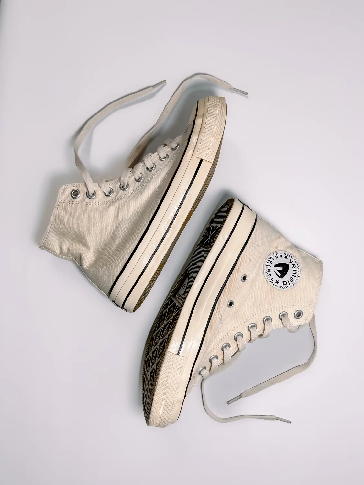
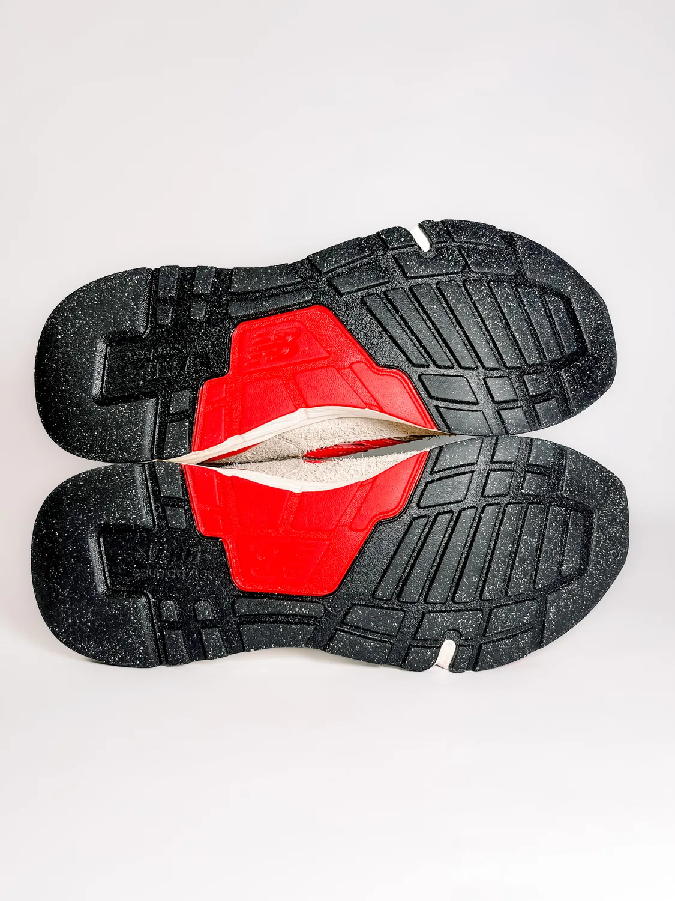
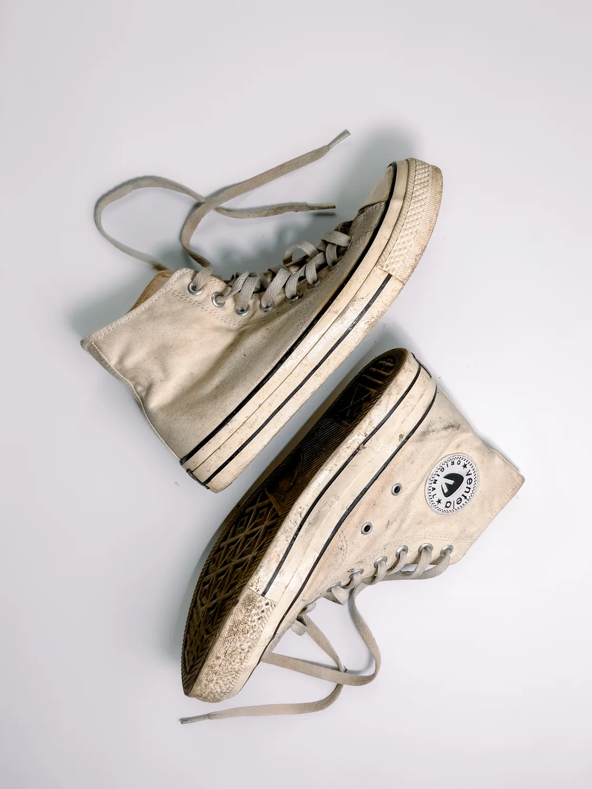
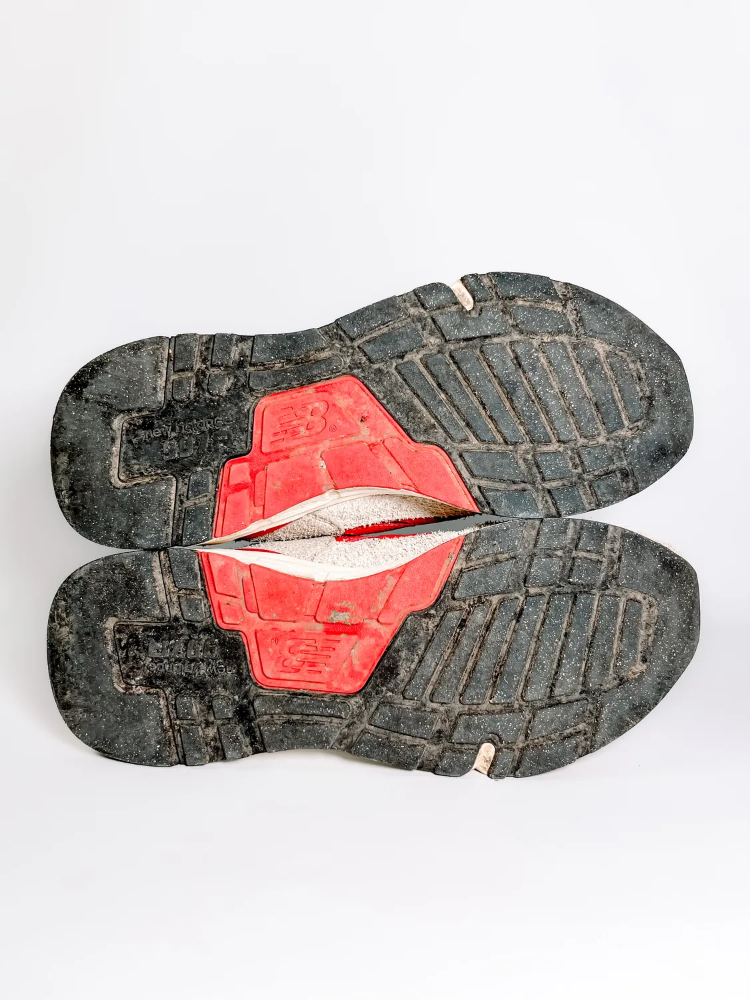

Aman untuk berbagai bahan
Canvas, suede, leather, knit, midsole, dan outsole ditangani sesuai karakter bahan.
Upload foto sepatu, dapat estimasi harga lewat WhatsApp, lalu pantau proses perawatan sampai selesai. Dibersihkan detail sesuai bahan, kondisi, dan tingkat kotoran.
Canvas, suede, leather, knit, midsole, dan outsole ditangani sesuai karakter bahan.
Fokus ke noda, sela outsole, pinggiran midsole, tali, dan area yang sering terlewat.
Status pesanan bisa dipantau dari submit, review harga, treatment, sampai selesai.
Beda material, beda treatment. Kami pisahkan proses untuk canvas, knit, leather, suede, midsole, dan outsole supaya hasil bersih tanpa merusak tekstur sepatu.

Upper, midsole, outsole, insole, dan tali dibersihkan untuk pemakaian harian yang sudah kusam.

Detailing sela outsole dan karet bawah supaya grip dan visual kembali solid.
Treatment lebih halus untuk bahan yang perlu pendekatan low-moisture dan finishing bersih.

BeforeMengangkat noda di canvas, pinggiran midsole, dan area tali.

BeforeMembersihkan debu dan tanah di sela tapak outsole.
Customer isi data, pilih layanan, metode antar, dan upload foto kondisi sepatu.
Admin melihat foto dan detail pesanan, lalu menetapkan harga final berdasarkan kondisi.
Customer menerima link konfirmasi, menyetujui harga, lalu pesanan masuk antrean pengerjaan.
Dashboard menyimpan status pesanan sampai selesai dan nota bisa dicetak.